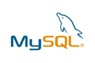

Cegep Bois de Boulogne
principaux SGBD
Oracle:
On pourrait définir Oracle comme un outil client/serveur de gestion de bases de données principalement utilisé dans les grandes entreprises
Caractéristiques: Premier éditeur de logiciels à développer et déployer des logiciels d'entreprise 100 % compatibles Internet sur l'ensemble de sa gamme de produits : bases de données, applications métier, outils de développement d'applications et d'aide à la décision.
Fonctionalités:
- créer et gérer des bases de données
- tables de paramétrage et relations
- créer des requêtes, développer des formulaires
- et générer des rapports.

Limites:
Microsoft SQL Server:
Microsoft SQL Server est un système de gestion de base de données relationnelle développé en tant que produit logiciel dont la fonction principale est de stocker et de récupérer des données à la demande d'autres applications.
Caractéristiques:sa haute disponibilité, son excellente intégration avec les autres systèmes Microsoft pour serveurs. Évolutivité, stabilité et sécurité.

Fonctionalités:
- créer et gérer des bases de données
- tables de paramétrage et relations
- créer des requêtes, développer des formulaires
- et générer des rapports.
Forces:
Limites:
MongoDB
MongoDB est une base de données NoSQL orientée document apparue au milieu des années 2000.
Caractéristiques: Il est utilisé pour stocker d’énormes volumes de données. Contrairement à une base de données relationnelle SQL traditionnelle, MongoDB n'est pas basé sur des tables et des colonnes. Les données sont stockées sous forme de collections et de documents.

Fonctionalités:
- créer et gérer des bases de données
- MongoDB stocke les objets de données dans des collections et des documents au lieu des tables et des lignes utilisées dans les bases de données relationnelles traditionnelles.
- Les collections comprennent des ensembles de documents, qui sont équivalents aux tables d'une base de données relationnelle.
Forces:
Limites:

MySQL:
MySQL est un système de base de données d'Oracle utilisé dans le monde entier pour gérer des bases de données.
Caractéristiques:MySQL vous permet de stocker et d'accéder à des données sur plusieurs moteurs de stockage, notamment InnoDB, CSV et NDB. MySQL est également capable de répliquer des données et de partitionner des tables pour améliorer les performances et la durabilité.

Fonctionalités:
- MySQL est un système de gestion de bases de données relationnelles.
- plate-forme à grande vitesse et flexible..
- et Peut être intégré à d’autres langages de programmation.
Forces:
Limites:
MariaDB
MariaDB est une SGDB relationnelle dérivée de MySQL
Caractéristiques: MariaDB est une SGDB relationnelle dérivée de MySQL, qui maintient la philosophie du logiciel libre et une très haute compatibilité avec MySQL. De cette manière, MariaDB peut être utilisée comme alternative à MySQL sans encourir de processus de migration coûteux ni de coûts de licence.

Fonctionalités:
- gère les données Types de données numériques, de données de date et d'heure et de données de chaîne.
- MariaDB offre des performances améliorées par rapport à MySQL lors de l'interrogation des vues et de la gestion du stockage flash.
- MariaDB comprend plus de moteurs de stockage et de plugins que MySQL, notamment Aria, Connect, Spider pour le partitionnement et TokuDB pour la gestion du Big Data.
Forces:
Limites:
tableau explicatif
le tableau resume les comparatif pour chaque SGBD
| SGDB | presences d'outil graphiques | mono/multiplataforme | cout SGBD | sauvegarde a chaud | sauvegarde incrementale | presence de service web |
|---|---|---|---|---|---|---|
| ORACLE | OUI | MULTIPLATAFORME | $$$$ | OUI | OUI | OUI |
| SQL SERVER | OUI | MULTIPLATAFORME | $$$$$ | OUI | OUI | OUI |
| MONGO DB | NON | MULTIPLATAFORME | $ | OUI | OUI | NON |
| MySQL | OUI | MULTIPLATAFORME | $$ | OUI | OUI | OUI |
| MARIADB | NON | MULTIPLATAFORME | $ | OUI | OUI | NON |